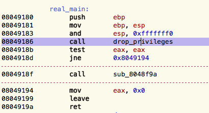

CySCA is a Capure The Flag with challenges ranging from crypto to reverse engineering, and from forensic to web pentest. You can get all the challenges in a VM, or just this binary.
We're going to analyze the second reverse engineering challenge, and try to capture the flag. As an added difficulty, we're going to restrict ourselves to static analysis. This means no logs, no debugger, only disassembly.
Let's see what we can get without diving into disassembly.
$ file 488f866ad090d0843657f322e516168a-re02 488f866ad090d0843657f322e516168a-re02: ELF 32-bit LSB executable, Intel 80386, version 1 (SYSV), dynamically linked (uses shared libs), for GNU/Linux 2.6.24, BuildID[sha1]=89593421780a0407b46f8d9c7671368699003cc9, stripped
It's a simple linux x86 binary. Nothing fancy here, but the symbols are stripped.
Let's look at the library functions used.
$ readelf -r 488f866ad090d0843657f322e516168a-re02 Relocation section '.rel.dyn' at offset 0x5c8 contains 1 entries: Offset Info Type Sym.Value Sym. Name 0804aff0 00001406 R_386_GLOB_DAT 00000000 __gmon_start__ Relocation section '.rel.plt' at offset 0x5d0 contains 34 entries: Offset Info Type Sym.Value Sym. Name 0804b000 00000107 R_386_JUMP_SLOT 00000000 setsockopt 0804b004 00000207 R_386_JUMP_SLOT 00000000 read 0804b008 00000307 R_386_JUMP_SLOT 00000000 printf 0804b00c 00000407 R_386_JUMP_SLOT 00000000 fgets 0804b010 00000507 R_386_JUMP_SLOT 00000000 fclose 0804b014 00000607 R_386_JUMP_SLOT 00000000 inet_ntoa 0804b018 00000707 R_386_JUMP_SLOT 00000000 signal 0804b01c 00000807 R_386_JUMP_SLOT 00000000 chdir 0804b020 00000907 R_386_JUMP_SLOT 00000000 alarm 0804b024 00000a07 R_386_JUMP_SLOT 00000000 __stack_chk_fail 0804b028 00000b07 R_386_JUMP_SLOT 00000000 getuid 0804b02c 00000c07 R_386_JUMP_SLOT 00000000 htons 0804b030 00000d07 R_386_JUMP_SLOT 00000000 perror 0804b034 00000e07 R_386_JUMP_SLOT 00000000 accept 0804b038 00000f07 R_386_JUMP_SLOT 00000000 waitpid 0804b03c 00001007 R_386_JUMP_SLOT 00000000 fread 0804b040 00001107 R_386_JUMP_SLOT 00000000 chroot 0804b044 00001207 R_386_JUMP_SLOT 00000000 setgid 0804b048 00001307 R_386_JUMP_SLOT 00000000 puts 0804b04c 00001407 R_386_JUMP_SLOT 00000000 __gmon_start__ 0804b050 00001507 R_386_JUMP_SLOT 00000000 exit 0804b054 00001607 R_386_JUMP_SLOT 00000000 __libc_start_main 0804b058 00001707 R_386_JUMP_SLOT 00000000 write 0804b05c 00001807 R_386_JUMP_SLOT 00000000 bind 0804b060 00001907 R_386_JUMP_SLOT 00000000 getgid 0804b064 00001a07 R_386_JUMP_SLOT 00000000 fopen 0804b068 00001b07 R_386_JUMP_SLOT 00000000 __errno_location 0804b06c 00001c07 R_386_JUMP_SLOT 00000000 fork 0804b070 00001d07 R_386_JUMP_SLOT 00000000 listen 0804b074 00001e07 R_386_JUMP_SLOT 00000000 setuid 0804b078 00001f07 R_386_JUMP_SLOT 00000000 vsnprintf 0804b07c 00002007 R_386_JUMP_SLOT 00000000 socket 0804b080 00002107 R_386_JUMP_SLOT 00000000 close 0804b084 00002207 R_386_JUMP_SLOT 00000000 send
Interesting. We can bet on a network daemon that's self-contained. It's also certainly dropping its privileges, since it uses setuid, setgid and chroot.
We can confirm our assumptions by looking at the strings in the executable.
$ strings 488f866ad090d0843657f322e516168a-re02 | tail -f Failed writing to socket Failed reading from socket Failed writing flag to socket FATAL ERROR bad knock number FATAL ERROR opening socket FATAL ERROR on binding FATAL ERROR on accept /dev/urandom ERROR: Unable to open urandom ;*2$"
Again, mostly network stuff. If we take a look at the rest of the output, we notice /flags.txt. The flag we're after should be on the filesystem.
Now for the juicy parts. I'm using Hopper Disassembler for easy cross-references, renaming, etc, but you can follow along in gdb, IDA, radare or your custom mess of python scripts if you prefer.
After loading the executable in hopper, it's correctly identified as 32 bits ELF. The entry point looks like this:
It's a i386 executable, so the arguments are passed using the [cdecl][7] convention. This means that arguments are pushed on the stack in reverse order. The first argument of [__libc_start_main][8] is the address of main, thus 0x8049180. In hopper, highlight it and press N to rename it to something more meaningful. Then jump to its disassembly by pressing enter.
Our main calls two functions, sub_80489f4 and sub_8048f9a.
Taking a quick look at the library functions and the strings used in the first function, we can guess it's just dropping privileges. We don't need to understand its inner-working in the details.
After renaming the privilege-dropping function, main looks like this:

Let's jump to the next function, sub_8048f9a. Since the control flow is more complex than main, hopper's graph-view comes in handy:

This looks like an infinite loop, since the last block unconditionnaly jmp up. The error handling is pretty bare bone and is handled by several block calling exit.
The first block is setting up a socket, and the next blocks call bind, listen and accept. The daemon is thus listening for connections.
The port binded by the server is set with the following disassembly:
mov eax, dword [0x8049ac4] ; load port number from DATA segment into eax movzx eax, ax ; truncate the higher bits (a port number is 16 bits) mov dword [esp], eax ; put eax on top of the stack, as first argument of the next call call htons@PLT ; convert the port to network byte order (big endian) mov word [ebp-0x68+var_62], ax ; store it on the stack, at the offset represented by var_62 mov dword [ebp-0x68+var_44], 0x1 mov dword [esp+0x10], 0x4 lea eax, dword [ebp-0x68+var_44] mov dword [esp+0xc], eax mov dword [esp+0x8], 0x2 mov dword [esp+0x4], 0x1 mov eax, dword [ebp-0x68+var_48] mov dword [esp], eax call setsockopt@PLT mov dword [esp+0x8], 0x10 lea eax, dword [ebp-0x68+var_60] ; address of the var_60 buffer (a struct sockaddr) mov dword [esp+0x4], eax mov eax, dword [ebp-0x68+var_48] mov dword [esp], eax call bind@PLT ; call bind with the sockaddr
bind takes a struct sockaddr * that contains, among other things, the network port.
struct sockaddr_in { short sin_family; u_short sin_port; ... };
We can see that the sockaddr is built on the stack by copying values at different offsets. The sockaddr begins at var_60, and the port is stored at var_62, since a short is two bytes long.
The port value used by the disassembly is stored at 0x8049ac4. In hopper, go to that address, and right-click the value to switch its representation to decimal. The port used is 3422.
We can confirm this assumption by netcating to the VM, and check if the port is open:
$ nc -v 192.168.0.104 3422 Ncat: Version 6.45 ( http://nmap.org/ncat ) Ncat: Connected to 192.168.0.104:3422. "^DNcat: 0 bytes sent, 4 bytes received in 0.61 seconds.
Accepted connections get their own forked process, handled by the next undiscovered function, sub_80491f4. The parent process just stay in the accept-then-fork loop.
This function does the real work of the portknock, so we're going to analyze it in more details, using hopper's decompiler.
Unfortunately we need to help it a bit here. In the disassembly call 0x80491c5, the address isn't recognized as a procedure. If we get to the disassembly we can guess why:
080491c0 call exit@PLT 080491c5 push ebp ; <= The address called from the previous function 080491c6 mov ebp, esp 080491c8 sub esp, 0x18 080491cb mov eax, dword [ebp-0x18+arg_offset_x0] 080491ce mov dword [0x804b090], eax 080491d3 mov dword [esp+0x4], 0x804919c 080491db mov dword [esp], 0xe 080491e2 call signal@PLT 080491e7 mov eax, dword [ebp-0x18+arg_offset_x4] 080491ea mov dword [esp], eax 080491ed call alarm@PLT 080491f2 leave 080491f3 ret
The previous instruction is a call to exit. Since exit never returns, the compiler didn't generate a function epilogue (no ret instruction). Since Hopper doesn't know that the function has ended, it extends the procedure to the next epilogue, at 0x080491f3.
To get the decompilation to work accurately, mark 0x080491c5 as a procedure. Doing so, the previous function doesn't see any epilogue anymore, so mark sub_804919c as a procedure again.
We can finally use the pseudo-code feature of Hopper on the portknock function and all its subfunctions:
function sub_80491f4 {
var_36 = arg_offset_x0;
eax = puts@PLT("portknockd: New Client. Waiting for knocks");
var_32 = 0x0;
while (var_32 <= 0x4) {
sub_80491c5(var_36, 0xa);
var_28 = sub_8049616(var_36, 0x98d2);
var_40 = write@PLT(var_36, &var_28, 0x4);
if (var_40 != 0x4) {
perror@PLT("Failed writing to socket");
close@PLT(var_36);
exit@PLT(0x1);
}
var_24 = 0x0;
var_40 = read@PLT(var_36, &var_24, 0x4);
if (var_40 != 0x4) {
perror@PLT("Failed reading from socket");
close@PLT(var_36);
exit@PLT(0x1);
}
var_44 = sub_80495e4(var_28, var_32);
if (var_44 == var_24) {
if (var_32 == 0x4) {
sub_804935d(var_36);
close@PLT(var_36);
exit@PLT(0x1);
}
close@PLT(var_36);
eax = sub_8049440(var_32);
var_36 = eax;
var_32 = var_32 + 0x1;
}
else {
close@PLT(var_36);
eax = exit@PLT(0x1);
}
}
return eax;
}
The only argument passed from the previous function is the connection's file descriptor, and is saved into var_36. After printing an informative message, the loop starts. The programmer certainly wrote a simple for(int var_32 = 0; var_32 <= 4; var32++), but since some statements are re-ordered by the compiler, it's a bit harder to see.
Hint: sub_80491c5(var_36, 0xa) sets a time-out on the process handling the connection. You can safely ignore it for the purpose of the analysis.
sub_8049616 generates a 4 bytes value (var_28) that is sent to the open connection using write. The response is read (into var_24). The next function called, sub_80495e4, uses the loop counter (var_32) and the value generated previously (var_28) to create a value that should match the value read from the network. If the values don't match, the process calls exit.
This is a simple challenge-response. We don't need to analyze the function creating the value, since that value is send to us. We only need to understand how that value and the loop counter are mixed together, replicate it and make the portknock succeed.
Here's the code for the mixing function, sub_80495e4:
function sub_80495e4 {
if ((arg_offset_x4 & 0x1) == 0x0) {
var_12 = (arg_offset_x4 + 0x2) * arg_offset_x0;
}
else {
var_12 = 0x2 + arg_offset_x0 + arg_offset_x4;
}
eax = var_12;
return eax;
}
Pretty simple. It takes the second argument (arg_offset_x4, the counter) and checks if its lower bit is set. Depending on the result, the mixing operation on the random value is different.
Let's rewrite it to python:
def mangler(rand, counter): if counter & 0x1 == 0x0: return (counter + 2) * rand else: return 2 + counter + rand
If the response we send match the awaited response, the connection is closed and sub_8049440 is called.
function sub_8049440 {
var_92 = *0x14;
signal@PLT(0xd, 0x1);
if (arg_offset_x0 > 0x3) {
perror@PLT("FATAL ERROR bad knock number");
exit@PLT(0x1);
}
arg_offset_x0 = arg_offset_x0 + 0x1;
var_52 = socket@PLT(0x2, 0x1, 0x0);
if (var_52 < 0x0) {
perror@PLT("FATAL ERROR opening socket");
exit@PLT(0x1);
}
var_60 = 0x0;
*(&var_60 + 0x4) = 0x0;
*(&var_60 + 0x8) = 0x0;
*(&var_60 + 0xc) = 0x0;
var_60 = 0x2;
var_64 = 0x0;
var_62 = LOWORD(htons@PLT(LOWORD(*(arg_offset_x0 * 0x4 + 0x8049ac4)) & 0xffff));
var_48 = 0x1;
setsockopt@PLT(var_52, 0x1, 0x2, &var_48, 0x4);
if (bind@PLT(var_52, &var_60, 0x10) < 0x0) {
perror@PLT("FATAL ERROR on binding");
exit@PLT(0x1);
}
listen@PLT(var_52, 0x5);
var_44 = 0x10;
var_56 = accept@PLT(var_52, &var_76, &var_44);
close@PLT(var_52);
if (var_56 < 0x0) {
perror@PLT("FATAL ERROR on accept");
exit@PLT(0x1);
}
eax = var_56;
edx = var_92 ^ *0x14;
if (CPU_FLAGS & E) {
eax = __stack_chk_fail@PLT();
}
return eax;
}
This function looks complicated, but keep in mind we don't need to understand every detail. Seeing the functions called, we guess it's creating a socket and listening on a new port. All we have to do is guess which one. Resist the temptation of bruteforcing, we can do better! htons is used to convert a port number (or anything else) from host- to network byte order. This means that the data we need is its argument.
*(arg_offset_x0 * 0x4 + 0x8049ac4)) & 0xffff) is taking the port number from an offset of the address 0x8049ac4. The & 0xffff is ignoring the higher bits of the data, since a port number is ranging from 1 to 65535. arg_offset_x0 is the loop counter passed from the previous function, (\+ 1, see line arg_offset_x0 = arg_offset_x0 + 0x1;.
Since an int is 4 bytes long, the htons call looks like port = htons(port_list[counter + 1]), with port_list living at 0x8049ac4.
By default, hopper shows 0x8049ac4 as one-byte data, in hex representation.

We can display the data in a more port looking way. Select the first address containing only one byte, and press D three time to set the data size to 4 bytes. Repeat for the four next ports in list.
We can now toggle the representation to decimal instead of hex, and the port list is ours!

Here's the code that performs this sequence:
import socket, struct, time def mangle(rand, counter): if counter & 0x1 == 0x0: return (counter + 2) * rand else: return 2 + counter + rand KNOCK_SERVER_IP = "192.168.0.105" ports = [3422, 4532, 5923, 2342, 5532] # the list of knocked port, extracted from the binary for i, port in enumerate(ports): print("+ Knocking on", port) # create a TCP socket and connect to the portknock server s = socket.socket(socket.AF_INET, socket.SOCK_STREAM) s.connect((KNOCK_SERVER_IP, port)) # receive and unpack the challenge buf = s.recv(4096) received, = struct.unpack('<i', buf) print("+ Received challenge value:", received) send_me = mangle(received, i) print("+ Sending response", send_me) s.send(struct.pack('<i', send_me)) # the VM is really slow to open a new socket, we need to wait a bit time.sleep(0.1) # we're in the last stage of the knock # receive and print the flag buf = s.recv(4096) print("+ Got flag:") print(buf.decode())
The '<i' format means we’re packing or unpacking a little endian signed integer.
It's working!
$ python3 knock_it_up.py + Knocking on 3422 + Received challenge value # 0 : 92 + Sending response 184 + Knocking on 4532 + Received challenge value # 1 : 88 + Sending response 91 + Knocking on 5923 + Received challenge value # 2 : 65 + Sending response 260 + Knocking on 2342 + Received challenge value # 3 : 1 + Sending response 6 + Knocking on 5532 + Received challenge value # 4 : 109 + Sending response 654 + Got flag: DemonViolatePride346